Examples#
Example Training Scripts Table of Contents
The examples/ folder includes helpful starting points for common cases.
To follow most of the examples you’ll need to install the benchmark environments with pip install amago[envs]. If you want to log to wandb or check out some of the example results, it’s worth reading this section of the tutorial. The public wandb links include example commands (click the “Overview” tab). Building this set of public examples with the new version of AMAGO is an active work in progress.
Use the CUDA_VISIBLE_DEVICES environment variable to assign basic single-GPU examples to a specific GPU index. Most of the examples share a command line interface. Use --help for more information.
0. Intro to Black-Box Meta-RL: Meta-Frozen-Lake#

Learn more about adaptive policies with help from an intuitive meta-RL problem. Train an agent to adapt over multiple episodes by learning to avoid its previous mistakes.
01. Basic Gymnasium#
Typical RL benchmarks are MDPs and can be treated as a simple special case of the full agent. Memory is often redundant but these tasks can be helpful for testing.
Example wandb for LunarLander-v2 with a Transformer
Example wandb for DM Control Suite Cheetah Run
02. GPU-Accelerated Envs: Gymnax#
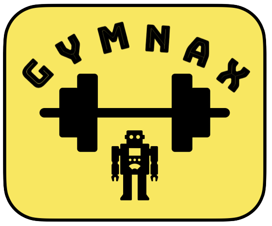{kind=link}
Like gymnasium, but 1000x faster! Use jax to add more --parallel_actors and speedup experiments. gymnax includes several interesting memory problems.
Example wandb for MemoryChain-bsuite
📊 Experimental 📊. Support for gymnax is a new feature.
03. POMDPs: POPGym#
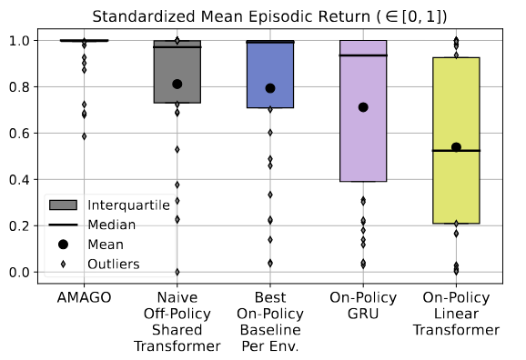{kind=link}
POPGym is a collection of memory unit-tests for RL agents. AMAGO is really good at POPGym and turns most of these tasks into quick experiments for fast prototyping. Our MultiDomainPOPGym env concatenates POPGym domains into a harder one-shot multi-task problem discussed in the followup paper.
Example wandb. These settings can be copied across every task in the ICLR paper.
04. Super Long-Term Recall: T-Maze#
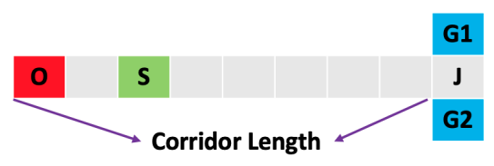{kind=link}
T-Maze is a modified version of the problem featured in Ni et al., 2023. T-Maze answers the question: RL issues (mostly) aside, what is the most distant memory our sequence model can recall? When using Transformers, the answer is usually whatever we can fit on the GPU…
05. Finite-Horizon Meta-RL: Dark Key-To-Door#
A common meta-RL problem where the environment resets for a fixed number of timesteps (rather than attempts) so that the agent is rewarded for finding a solution quickly in order to finish the task as many times as possible. Loosely based on experiments in Algorithm Distillation.
06. Meta-RL: Symbolic DeepMind Alchemy#
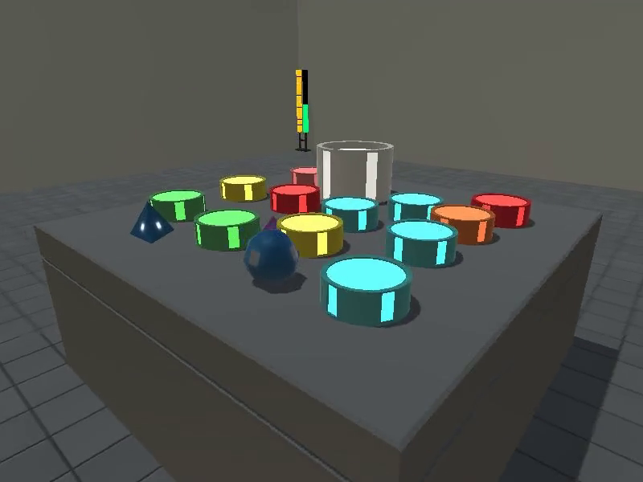{kind=link}
Symbolic version of the DeepMind Alchemy meta-RL domain.
🔥 Challenging 🔥. Alchemy has a hard local max strategy that can take many samples to break. We’ve found this domain to be very expensive and hard to tune, though we can usually match the pure-RL (VMPO) baseline from the original paper. We’ve never used Alchemy in our published results but maintain this script as a starting point.
Example wandb from a recent large-scale attempt with the Multi-Task agent: Actor Process or Learner Process.
07. Meta-RL: Meta-World#
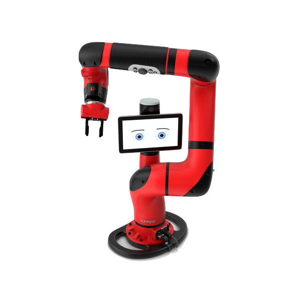{kind=link}
Meta-World creates a meta-RL benchmark out of robotic manipulation tasks. Meta-World ML45 is a great example of why we’d want to use the MultiTaskAgent learning update. For much more information please refer to our NeurIPS 2024 paper.
Example wandb (MultiTaskAgent on ML45!)
08. Multi-Task RL: Atari#
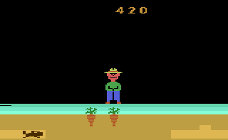{kind=link}
Multi-Task RL is a special case of meta-RL where the identity of each task is directly provided or can be inferred without memory. We focus on the uncommon setting of learning from unclipped rewards because it isolates the challenge of optimizing distinct reward functions. See the NeurIPS 2024 paper for more.
Example wandb for an easy 4-game variant
09. Multi-Game Two-Episode Procgen#
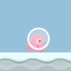{kind=link}
Multi-Game Procgen has a similar feel to Atari. However, Procgen’s procedural generation and partial observability (especially in “memory” mode) is better suited to multi-episodic adaptation. This example highlights the TwoAttemptMTProcgen setup used by experiments in the second paper.
10. Multi-Task BabyAI#
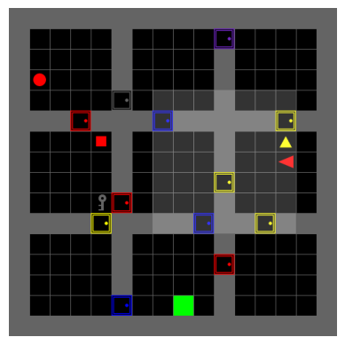{kind=link}
BabyAI is a collection of procedurally generated gridworld tasks with simple language instructions. We create a fun multi-task variant for adaptive agents.
Example multi-seed report (which uses an outdated version of AMAGO).
11. XLand MiniGrid#
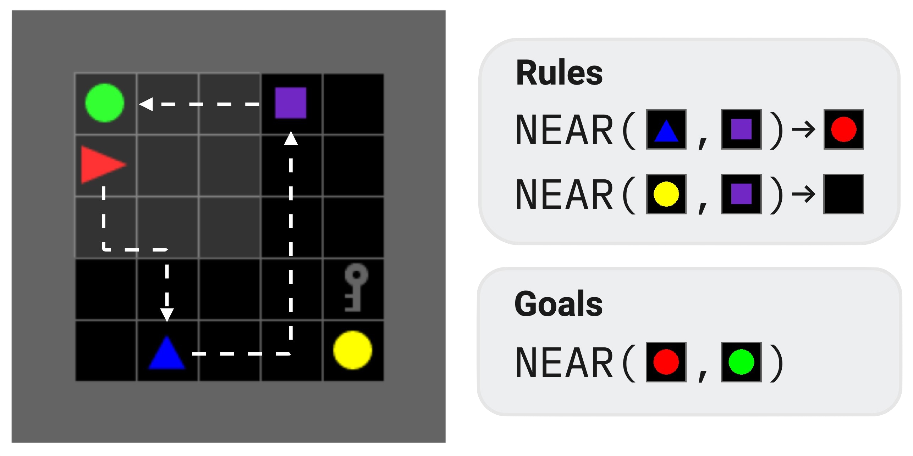{kind=link}
XLand-MiniGrid is a jax-accelerated environment that brings the task diversity of AdA to Minigrid/BabyAI-style gridworlds.
📊 Experimental 📊. Support for XLand MiniGrid is a new feature.
12. Toy Meta-RL / Locomotion: HalfCheetahVelocity (w/ HalfCheetahV4)#
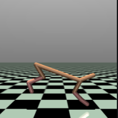{kind=link}
A more modern remaster of the famous HalfCheetahVel mujoco meta-RL benchmark, where the cheetah from the HalfCheetah-v4 gymnasium task needs to run at a randomly sampled (hidden) target velocity based on reward signals.
13. Hindsight Relabeling: MazeRunner#
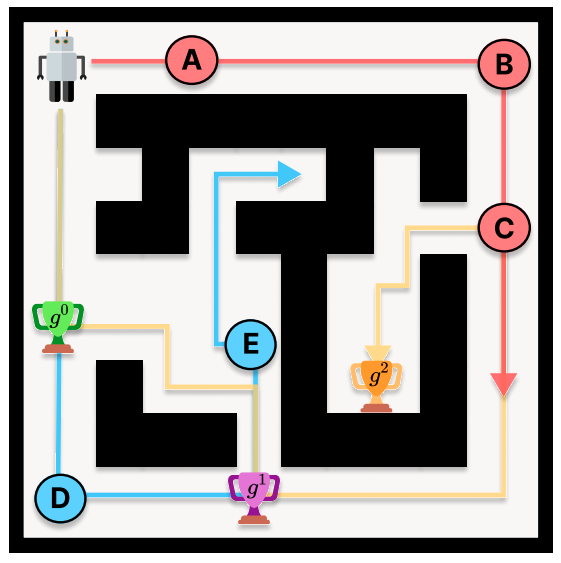{kind=link}
Off-policy learning makes it easy to relabel old sequence data with new rewards. MazeRunner is a goal-conditioned POMDP navigation problem used to discuss & test the hindsight instruction relabeling technique in our paper. This example includes a template for using hindsight relabeling in the new version of AMAGO.
14. Offline RL: D4RL#
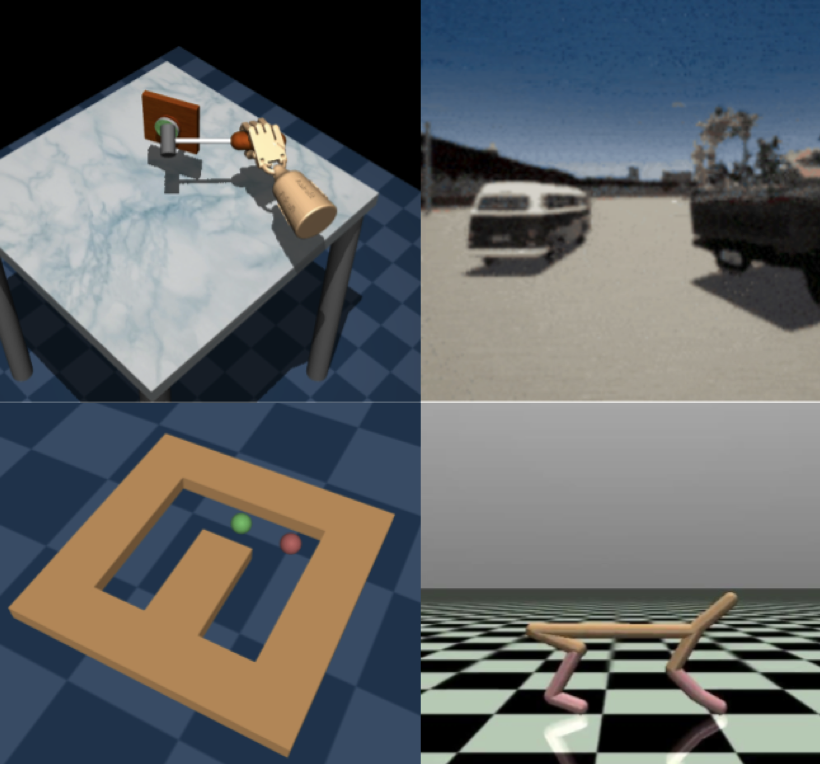{kind=link}
Offline RL on the (original) D4RL datasets.